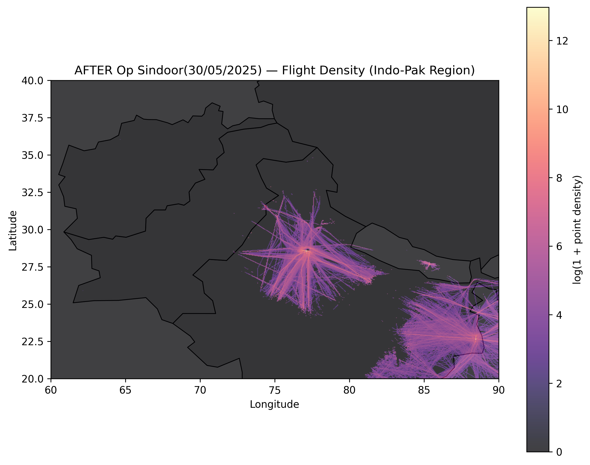
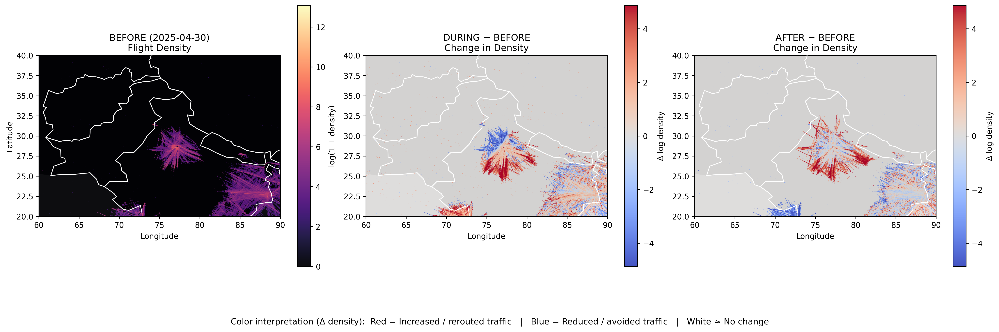
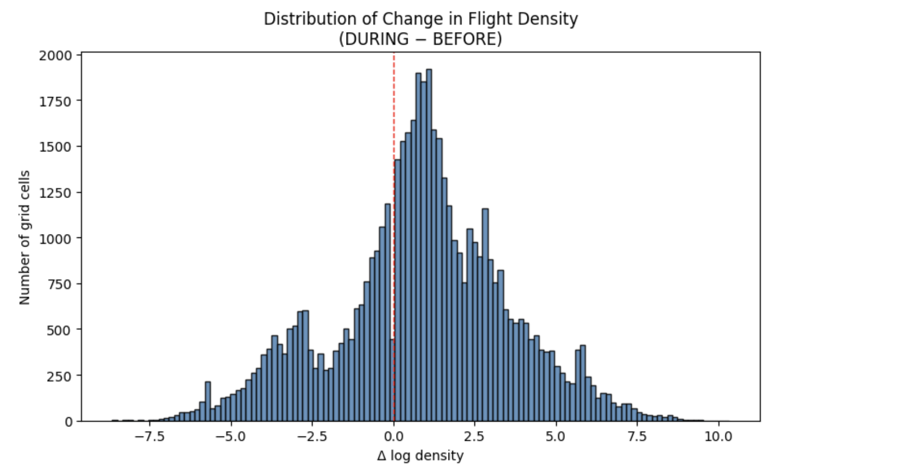
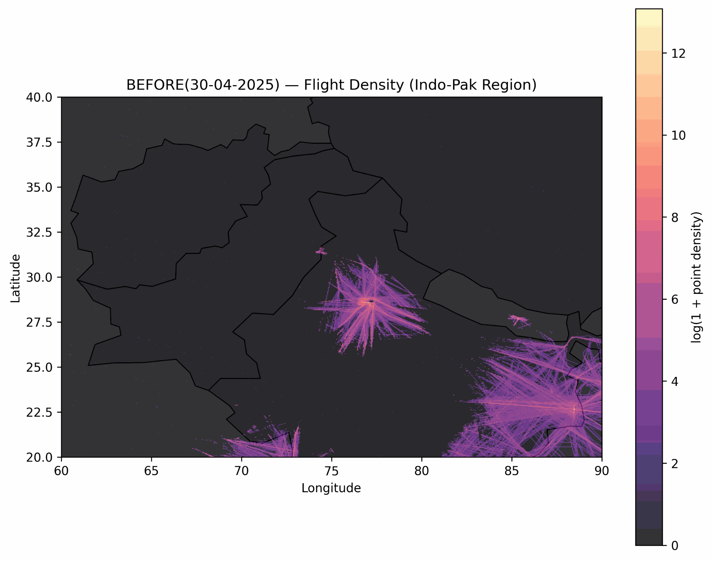
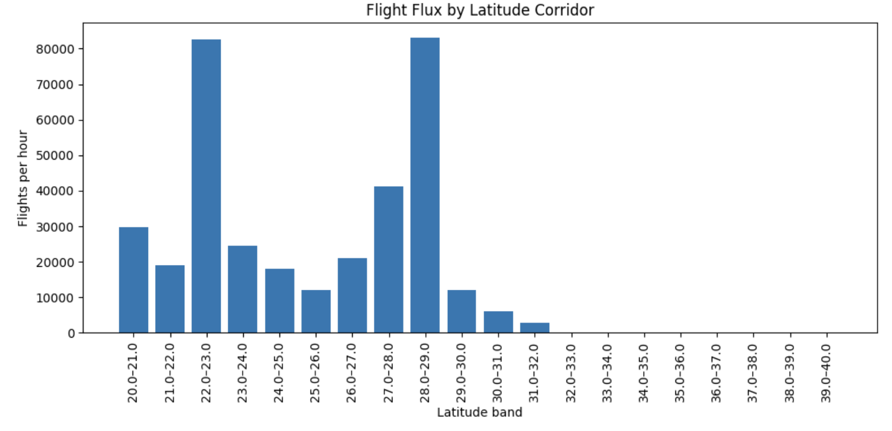
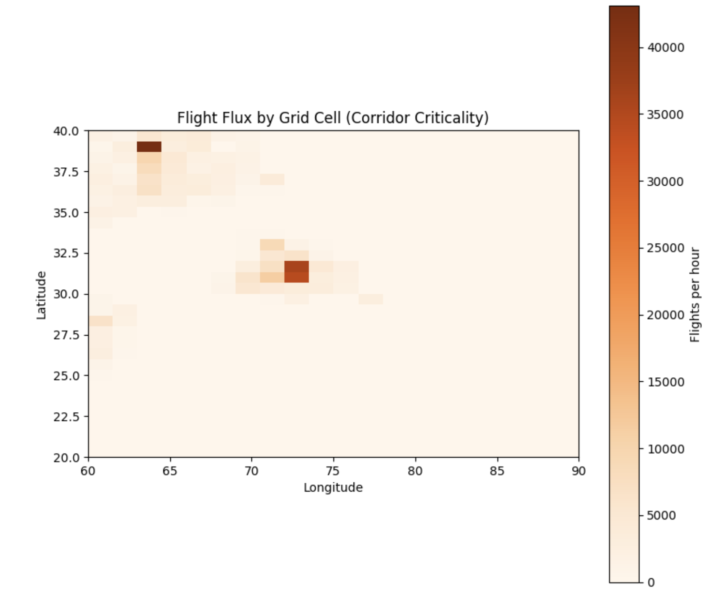

Figures & Visual Evidence
Indo-Pak Airspace Case Study · Skies Over Conflict Zones

Figure 1. Baseline flight density over the Indo-Pak region prior to escalation.
The visualization highlights established east–west and regional corridors under
peace-time conditions, serving as a reference for subsequent deviation analysis.

Figure 2. Flight density observed during the escalation window defined as
Operation Sindoor. Noticeable compression and directional shifts indicate early
avoidance behavior and rerouting in response to airspace risk.

Figure 3. Post-escalation flight density following Operation Sindoor.
While partial normalization is visible, residual deviations suggest that aviation
systems do not immediately revert to baseline behavior.

Figure 4. Comparative visualization of flight density changes.
Red regions indicate increased or rerouted traffic, while blue regions represent
reduced or avoided airspace. White regions denote minimal change.

Figure 5. Distribution of grid-level changes in log-transformed flight density
during Operation Sindoor relative to baseline. The asymmetry of the distribution
reflects localized but significant rerouting effects.

Figure 6. Animated comparison of flight density before, during, and after
Operation Sindoor. The temporal evolution illustrates both the speed of disruption
onset and the gradual nature of recovery.

Figure 7. This chart shows the total volume of flights aggregated across all longitudes for each 1° latitude band, highlighting which latitude corridors carry the most overall traffic. High bars indicate busy east–west air corridors, but not necessarily spatial choke points.

Figure 8. This heatmap shows flight concentration within individual latitude–longitude grid cells, revealing where traffic is geographically compressed. Darker cells indicate critical airspace choke points where restrictions would impact a disproportionate number of flights.